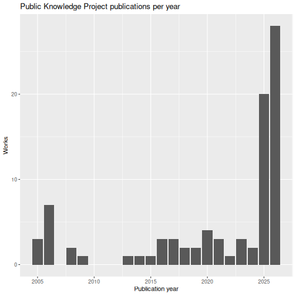
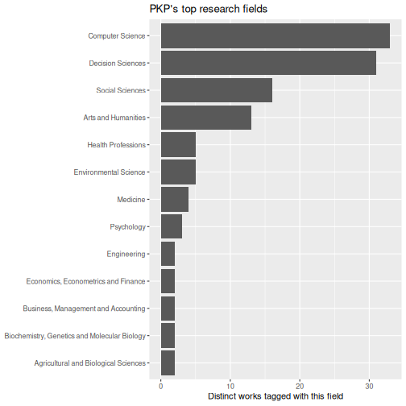

Bibliometrics with OpenAlex
Last updated on 2026-09-22 | Edit this page
Overview
Questions
- A patron asks a bibliometrics question. What do I need to figure out before I can even query OpenAlex?
- How do I pull publication data for an author or institution into R, without waiting forever or hitting a wall?
- How is API data different from a clean CSV, and how do I tidy it?
- How do the visualization and reporting skills from earlier episodes transfer to new data?
- What can this kind of snapshot not tell a patron?
Objectives
- Decide whether OpenAlex represents the thing a patron is asking about: an author, a research center with its own entry, or a department with no entry of its own
- Query the OpenAlex API from R using
openalexR - Apply prior data-cleaning skills to nested/list-column API data
- Reuse
ggplot2patterns from Data Visualization with ggplot2 on a new dataset - Knit a short, honest bibliometric snapshot from a starter report template
Setup
This episode needs one new package. Install it the same way you
installed tidyverse back in Before We Start:
R
install.packages("openalexR")
dplyr, tidyr, and ggplot2 are
packages you already installed and used in earlier episodes, nothing new
there:
R
# Already installed and loaded from earlier episodes:
# library(dplyr)
# library(tidyr)
# library(ggplot2)
# New for this episode:
library(openalexR)
A patron comes to the desk
You’re at the reference desk, virtual or in person, and the director of a research center asks for an exploratory snapshot: how has the center’s publication output and research focus changed over time? This episode teaches you to put together an answer with OpenAlex and R, the same import, clean, visualize, and report workflow from the last four episodes, applied to scholarly metadata instead of circulation data.
OpenAlex is a free, open catalog of the world’s research (works, authors, institutions), with a CC0 license and no account required for casual use. Before you write any code, the first real question is a reference-interview question, not a technical one: does OpenAlex represent what this patron is asking about as its own distinct entity?
Accessing OpenAlex
OpenAlex works without an account for the kind of casual, occasional use this workshop needs. A free OpenAlex API key raises your daily request budget if you ever need more than that, but you won’t need one for anything here. Don’t put a real API key, or anyone’s personal email, into lesson code, a saved data file, or anything you commit to a repository.
Is this a person, a center, or a department?
A bibliometrics request usually falls into one of three cases, and each one changes how much work you’re signing up for.
- An author. One person’s own publication record. Usually queryable once you’ve confirmed you have the right person. Common names collide, so check an ORCID if the patron has one.
- An organization with its own OpenAlex entry. Could be a university, a research center, a museum, a nonprofit, anything with a distinct identity in OpenAlex. Small, checkable, and often fetchable live during a workshop. The Public Knowledge Project, used below, is this case.
- A department with no entry of its own. Very common ask (“how has my department’s output changed?”), and OpenAlex usually has no clean answer, because most departments aren’t a distinct entity in OpenAlex the way a whole university or research center can be. Answering it for real would need a verified roster of the department’s authors, their membership dates, and a rule for handling joint appointments and cross-affiliations. That’s a real project on its own, not something to solve in one workshop exercise.
A whole university is usually its own entity too, but that doesn’t make it a good fit for a quick workshop demo: it’s normally far too large to fetch or inspect live.
R
# Not evaluated. Illustrates scale only.
oa_fetch(
entity = "works",
authorships.institutions.id = "SOME_LARGE_UNIVERSITY_ID",
count_only = TRUE
)
# A large research university can have tens of thousands of works indexed.
# That's too many to fetch or inspect live in a workshop, and it's exactly
# why the worked example below uses something smaller.
Resolving the entity: two worked cases
Two short worked examples below show what searching, inspecting, and confirming an entity involves: once for an organization, once for a person.
Case 1: an organization
The instructor demo below profiles the Public Knowledge Project (PKP), a nonprofit that builds free, open-source scholarly-publishing software, including Open Journal Systems, which many libraries run to publish their own journals. It’s a deliberately manageable example: a distinct OpenAlex organization, a small and workshop-sized set of works, and direct relevance to libraries, publishing, and scholarly communication. Most university departments won’t be this straightforward either way, which is the whole point of the discussion above.
R
# Search first to confirm you have the right organization. Search terms can
# be ambiguous (similarly named organizations, regional branches).
institution_matches <- oa_fetch(
entity = "institutions",
search = "Public Knowledge Project"
)
institution_matches |>
select(display_name, id, ror, works_count)
A single match: Public Knowledge Project, ROR
ror.org/05ek4tb53. Its own works_count field
reports 148, a running total OpenAlex keeps for the organization
overall. That’s not the same number as what a specific, filtered query
returns, which is why this episode always trusts a real query result
over a summary field like this one.
R
institution_id <- "I4387153203"
The line below is what produced this episode’s data (details in
data/pkp-works-2026-09-20-PROVENANCE.md, including the
retrieval date and package version), but it’s shown here as a comment,
not run live during the workshop:
R
# Shown for provenance, not executed during the workshop.
# pkp_works <- oa_fetch(
# entity = "works",
# authorships.institutions.id = institution_id,
# from_publication_date = "1998-01-01"
# )
The date filter above is doing real work, not only narrowing scope: an unfiltered fetch includes two records dated 1969, decades before PKP was founded in 1998. That kind of outlier is common enough in API data that it’s worth checking for before trusting a count.
readRDS() loads R’s own native saved-object format.
Unlike a CSV, an .rds file preserves list-columns exactly
as they were, which matters for the nested data below.
R
pkp_works <- readRDS("data/pkp-works-2026-09-20.rds")
nrow(pkp_works)
OUTPUT
[1] 8787 works is small enough to fetch live in a workshop session without rate-limit or runtime trouble, worth checking before committing to a bigger query. This is an exploratory snapshot of what OpenAlex had indexed as of the retrieval date, not a complete or authoritative evaluation of PKP’s output.
Case 2: a person
What if the patron is asking about a person instead? This episode’s author, Tim Dennis, agreed to let his own public OpenAlex record stand in as the example, so this case is a live worked example rather than a hypothetical.
R
author_matches <- oa_fetch(
entity = "authors",
search = "Tim Dennis"
)
author_matches |>
select(display_name, id, orcid, works_count, last_known_institutions)
That search returns more than a dozen different people who share this name. A name alone is never a unique identifier: the next step is checking each candidate’s ORCID, affiliation, or a known work against what you already know about the person you mean.
One candidate has ORCID 0000-0001-6632-3812. ORCID’s own
public record for that ID lists “Director, Data Science Center, UCLA
Library,” starting in 2017, matching Tim Dennis’s current role, along
with earlier positions at UC San Diego and UC Berkeley Libraries. That’s
a strong match on affiliation and identity.
R
author_id <- "A5101548578"
Here’s the twist worth sitting with: a correct ORCID match doesn’t guarantee a clean OpenAlex author record. Pull up the works attached to this ID and you’ll find titles like “Epipolar line estimation and rectification” and “Image sequence stabilisation based on DFT filtering,” image-processing research with no connection to library data science. This is where the third disambiguation signal earns its keep: a known work. “Top 10 FAIR Data & Software Things” (2019) is recognizably his, a short, citable piece from the open-science community he works in. Spotting one title you recognize among a run of unrelated ones is exactly how you’d notice, in practice, that a record has been merged rather than trusting the ORCID alone and moving on. OpenAlex has combined this ORCID with a different researcher who happens to share the same name. The ID above is still the right one to have selected, since it’s the record tied to the verified ORCID, but that doesn’t make a raw works count from it trustworthy, so this episode stops here rather than running one. Sometimes the answer to “how many works does this person have” is “not a number this particular record can give you cleanly.”
Tim Dennis, this lesson’s author, has agreed to the use of his real, public OpenAlex and ORCID records here. OpenAlex data can contain omissions, duplicates, incorrect affiliations, or attribution errors like the one above. This example is about disambiguation, not an evaluation of anyone’s research.
Challenge: Identify and fetch your own
Imagine a patron has asked you their bibliometrics question. First, which of the three cases above is it: an author, an organization with its own entry, or a department without one? Then work through the same steps as the worked cases above for your own choice: search, inspect the candidates, and save a verified ID.
If you’d rather use your own name or ORCID than a hypothetical patron, that’s fine. Nobody needs to search for or share their own publication record if they’d rather not, and a thin or empty result says something about OpenAlex’s coverage, not about anyone’s work.
Give yourself about five minutes. If your search is ambiguous, returns nothing usable, or you’re still not confident in a match after that, stop and use the fallback below instead. None of the remaining exercises depend on your own fetch having worked.
R
my_works <- pkp_works
Institution path:
R
institution_matches <- oa_fetch(
entity = "institutions",
search = "your institution's name"
)
institution_matches |>
select(display_name, id, ror, works_count)
institution_id <- "PASTE_THE_ID_YOU_CONFIRMED"
oa_fetch(
entity = "works",
authorships.institutions.id = institution_id,
count_only = TRUE
)
# Only fetch works if that count feels workshop-sized:
my_works <- oa_fetch(
entity = "works",
authorships.institutions.id = institution_id,
from_publication_date = "2020-01-01"
)
Author path:
R
author_matches <- oa_fetch(
entity = "authors",
search = "the name you're checking"
)
author_matches |>
select(display_name, id, orcid, works_count, last_known_institutions)
author_id <- "PASTE_THE_ID_YOU_CONFIRMED"
oa_fetch(
entity = "works",
authorships.author.id = author_id,
count_only = TRUE
)
my_works <- oa_fetch(
entity = "works",
authorships.author.id = author_id,
from_publication_date = "2020-01-01"
)
Both return a data frame, one row per work, with the same columns
shown below on the PKP data. For institutions, double-check the name
and, if available, its ROR ID against your search result. For authors,
an ORCID is the most reliable disambiguator, though as the worked
example above shows, even that isn’t a complete guarantee. If you didn’t
manage a confident match, my_works <- pkp_works is a
completely fine place to be for the rest of this episode.
Optional: why query this directly?
Skip this first if you’re running short on time.
A patron at the desk needs something by end of day. OpenAlex is free, no account required, CC0 licensed. What’s different about reaching for this versus a vendor tool’s export, like Scopus or Web of Science? Think about access, transparency, coverage, name disambiguation, and whether someone else could reproduce your result.
Clean and reshape the data
pkp_works is a data frame, one row per work, the same
shape you already know. What’s different from books.csv is
that some of its columns aren’t simple values: they’re
list-columns, each cell holding a small data frame of
its own.
R
glimpse(pkp_works)
OUTPUT
Rows: 87
Columns: 44
$ id <chr> "https://openalex.org/W2741809807", "htt…
$ title <chr> "The state of OA: a large-scale analysis…
$ display_name <chr> "The state of OA: a large-scale analysis…
$ authorships <list> [<tbl_df[9 x 7]>], [<tbl_df[1 x 7]>], […
$ abstract <chr> "Despite growing interest in Open Access…
$ doi <chr> "https://doi.org/10.7717/peerj.4375", "h…
$ publication_date <date> 2018-02-13, 2015-05-18, 2013-04-01, 202…
$ publication_year <int> 2018, 2015, 2013, 2025, 2014, 2025, 2005…
$ fwci <dbl> 97.3613, 32.5377, 4.1790, 12.3144, 1.773…
$ cited_by_count <int> 1258, 72, 40, 8, 14, 2, 15, 10, 10, 9, 3…
$ counts_by_year <list> [<data.frame[10 x 2]>], [<data.frame[11…
$ ids <list> <"https://openalex.org/W2741809807", "h…
$ type <chr> "article", "article", "article", "articl…
$ is_oa <lgl> TRUE, FALSE, TRUE, TRUE, TRUE, TRUE, FAL…
$ is_oa_anywhere <lgl> TRUE, FALSE, TRUE, TRUE, TRUE, TRUE, FAL…
$ oa_status <chr> "gold", "closed", "bronze", "diamond", "…
$ oa_url <chr> "https://doi.org/10.7717/peerj.4375", NA…
$ any_repository_has_fulltext <lgl> TRUE, FALSE, FALSE, FALSE, TRUE, TRUE, F…
$ source_display_name <chr> "PeerJ", "Aslib Journal of Information M…
$ source_id <chr> "https://openalex.org/S1983995261", "htt…
$ issn_l <chr> "2167-8359", "0001-253X", "0095-4403", "…
$ host_organization <chr> "https://openalex.org/P4310320104", "htt…
$ host_organization_name <chr> "PeerJ, Inc.", "Emerald Publishing Limit…
$ landing_page_url <chr> "https://doi.org/10.7717/peerj.4375", "h…
$ pdf_url <chr> NA, NA, "https://onlinelibrary.wiley.com…
$ license <chr> "cc-by", NA, NA, "cc-by", NA, "other-oa"…
$ version <chr> "publishedVersion", "publishedVersion", …
$ referenced_works <list> <"https://openalex.org/W1560783210", "h…
$ referenced_works_count <int> 54, 32, 3, 39, 13, 6, 49, 13, 0, 42, 32,…
$ related_works <list> <"https://openalex.org/W2294604317", "h…
$ concepts <list> [<data.frame[19 x 5]>], [<data.frame[15…
$ topics <list> [<tbl_df[12 x 5]>], [<tbl_df[12 x 5]>],…
$ keywords <list> [<data.frame[16 x 3]>], [<data.frame[13…
$ is_paratext <lgl> FALSE, FALSE, FALSE, FALSE, FALSE, FALSE…
$ is_retracted <lgl> FALSE, FALSE, FALSE, FALSE, FALSE, FALSE…
$ language <chr> "en", "en", "en", "en", "en", "en", "en"…
$ sustainable_development_goals <list> NA, NA, [<data.frame[1 x 3]>], NA, [<da…
$ awards <list> NA, NA, NA, NA, NA, NA, NA, NA, NA, NA,…
$ funders <list> NA, NA, NA, NA, NA, NA, NA, NA, NA, NA,…
$ apc <list> [<data.frame[2 x 5]>], NA, NA, NA, NA, …
$ first_page <chr> "e4375", "289", "18", NA, NA, "190", "S3…
$ last_page <chr> "e4375", "304", "21", NA, NA, "196", "S4…
$ volume <chr> "6", "67", "39", "86", "1", "12", "95", …
$ issue <chr> NA, "3", "4", "1", "2", "2", "S1", "2", …That’s a lot of columns at once. Don’t try to take in all 44: focus
specifically on id, display_name, and
publication_year (flat, ready to use as-is), and at
authorships and topics (list-columns, need
more work first, covered next).
To work with a list-column, unnest it into its own tidy table. A
first attempt at unnesting topics hits a real, common
snag:
R
pkp_works |>
select(id, display_name, topics) |>
unnest(topics)
Error in `unnest()`:
! Can't duplicate names between the affected columns and the original data.
✖ These names are duplicated:
ℹ `id` and `display_name`, from `topics`.
ℹ Use `names_sep` to disambiguate using the column name.The work itself has an id and display_name,
and so does every topic attached to it, so unnest() refuses
to guess which is which. Fix it with names_sep, which
prefixes the unnested columns:
R
pkp_topics <- pkp_works |>
select(id, display_name, publication_year, topics) |>
unnest(topics, names_sep = "_")
nrow(pkp_topics)
OUTPUT
[1] 63287 works became 632 rows: OpenAlex tags each work with several
topics, at several levels of a hierarchy (topic,
subfield, field, domain), so one
work now appears once per topic-level combination. That row count jump
is expected, not a bug, but it’s worth noticing before it surprises you
downstream, including a few sections from now, when counting “works per
field” needs one more step because of it. It’s also why the report step
later calculates totals from pkp_works, one row per work,
and not from this unnested table, which would badly overcount.
Optional stretch: unnest a second field
If you have time left, try the same pattern on
authorships instead of topics. Expect a bigger
row jump: a work with several authors becomes several rows, one per
author.
R
pkp_authors <- pkp_works |>
select(id, display_name, publication_year, authorships) |>
unnest(authorships, names_sep = "_")
Visualize
The same ggplot2 patterns from Data Visualization with
ggplot2 transfer directly.
R
pkp_works |>
count(publication_year) |>
ggplot(aes(x = publication_year, y = n)) +
geom_col() +
labs(x = "Publication year", y = "Works",
title = "Public Knowledge Project publications per year")

Output stays low and uneven for most of the range, then jumps sharply in the last two years, which is worth naming out loud as a real pattern rather than glossing over: it could reflect a genuine increase in output, a change in what OpenAlex indexes, or both, and a patron reading this chart would reasonably ask which one it is.
Challenge: Transfer the pattern
Reproduce this chart for your own institution, author, or the cached data, starting from your notes from Data Visualization with ggplot2 rather than being handed new code.
R
my_works |>
count(publication_year) |>
ggplot(aes(x = publication_year, y = n)) +
geom_col() +
labs(x = "Publication year", y = "Works")
Adaptation usually needed: your date range and count scale will differ, and a small dataset may have fewer bars than PKP’s, which is real signal, not an error.
The instructor can also demonstrate a second chart type, filtering to
the top level of the topic hierarchy. One real wrinkle first: a single
work can carry more than one topic mapped to the same field, so counting
rows in pkp_topics would count some works more than once.
Count distinct works per field instead:
R
pkp_topics |>
filter(topics_type == "field") |>
distinct(id, topics_display_name) |>
count(topics_display_name, sort = TRUE) |>
slice_max(n, n = 10) |>
ggplot(aes(x = n, y = reorder(topics_display_name, n))) +
geom_col() +
labs(x = "Distinct works tagged with this field", y = NULL,
title = "PKP's top research fields")

Computer Science and Decision Sciences lead, well ahead of Social Sciences and Arts and Humanities.
Optional stretch: pick your own question
Skip this if you’re running short on time. It isn’t required for the report below.
Try the top-fields chart above on your own data, or try a
citation-count distribution (geom_histogram() on
cited_by_count) instead. There’s no single right answer:
the point is picking whichever chart answers the patron’s question.
Report back to the patron
The point of all this is a report someone else can understand, reinforcing the reproducibility framing from Reproducible Reports with Quarto, not hand-copied numbers.
R
n_works <- nrow(pkp_works)
year_range <- range(pkp_works$publication_year, na.rm = TRUE)
A short, honest snapshot might say:
As of the retrieval date recorded in this project, the Public Knowledge Project has 87 works indexed by OpenAlex, spanning 2005 to 2026, most often tagged with Computer Science and Decision Sciences fields.
That’s deliberately modest language: an indexed count from one open database, not a claim about everything PKP has ever published or built. Publication and citation counts are a partial picture, not a complete measure of research quality, and a current year’s total is usually an undercount because indexing takes time to catch up.
Challenge: Capstone report
Use the starter template to knit a short report as if you were about to hand it to the patron from the frame story: written for them, not for yourself. If you used your own author record earlier, you can report on the cached data instead of sharing anything personal.
A finished report should:
- name the author or institution it’s about
- give the retrieval or fixture date
- say the works are “indexed by OpenAlex,” not a complete count
- give a date range and total work count, calculated from one row per work
- include one clearly labeled plot
- state one finding in plain language
- name at least one real limitation
- render without errors
Swap with a neighbor playing the patron. Can they answer their own question from your report alone, without you explaining it?
There’s no fixed answer key. The real check is whether a “patron” reading it cold gets their answer. If they can’t, the summary sentence probably needs to say more, or the plot needs a clearer title or label.
Wrap-up discussion
What would you still want to know about this institution or author that a snapshot like this alone can’t tell you?
- OpenAlex works without an account for casual use like this, and doesn’t need a personal email or API key for a workshop-scale query.
- Deciding whether a patron’s request is an author, an organization with its own entry, or a department with no entry of its own is a reference-interview skill, not only an API choice.
- API responses often include list-columns.
tidyr::unnest(..., names_sep = "_")flattens them while avoiding name collisions with the outer table. - Unnesting a list-column multiplies rows, one per nested value, so totals should come from the original one-row-per-work table, not the unnested one.
- OpenAlex’s current subject field is
topics, not the older, unmaintainedconceptsfield. - A verified ORCID confirms you have the right person, but not that OpenAlex’s own record for them is clean. Check actual works before trusting a count.
- The same
ggplot2and reporting skills from earlier episodes transfer directly to new, API-sourced data, and any report should say plainly what it can’t tell you.